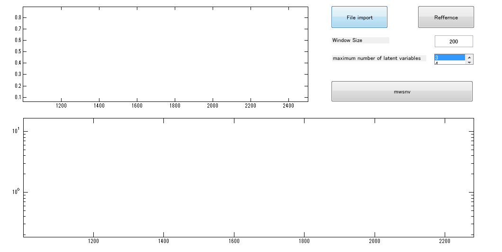
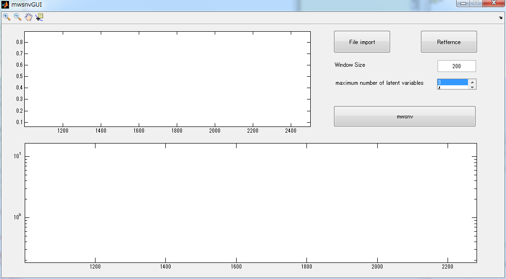

Contents
function varargout = mwsnvGUIexplain(varargin)
gui_Singleton = 1;
gui_State = struct('gui_Name', mfilename, ...
'gui_Singleton', gui_Singleton, ...
'gui_OpeningFcn', @mwsnvGUI_OpeningFcn, ...
'gui_OutputFcn', @mwsnvGUI_OutputFcn, ...
'gui_LayoutFcn', [] , ...
'gui_Callback', []);
if nargin && ischar(varargin{1})
gui_State.gui_Callback = str2func(varargin{1});
end
if nargout
[varargout{1:nargout}] = gui_mainfcn(gui_State, varargin{:});
else
gui_mainfcn(gui_State, varargin{:});
end
--- opening関数
function mwsnvGUI_OpeningFcn(hObject, eventdata, handles, varargin)
handles.output = hObject;
handles.refferncevalue = varargin;
handles.fmaxvalue = varargin;
handles.ws = varargin;
cla(handles.preview_axes);
cla(handles.result_axes);
guidata(hObject, handles);

--- output関数
function varargout = mwsnvGUI_OutputFcn(hObject, eventdata, handles)
varargout{1} = handles.output;

--- fileimportボタンのコールバック
function fileimport_Callback(hObject, eventdata, handles)
data = uiimport('-file');
data = translength(data.data);
handles.wave = data(1,:);
handles.spec = data(2:end,:);
guidata(hObject, handles);
axes(handles.preview_axes);
plot(handles.wave, handles.spec);
axis(handles.preview_axes, 'tight');
--- reffernceボタンのコールバック
function reffernce_Callback(hObject, eventdata, handles)
[fname, dpath, findex] = uigetfile('*.csv');
if findex~=0
fpath = fullfile(dpath, fname);
else
disp('ファイルがありません。');
end;
ref = importcsv4(fpath);
ref = translength(ref);
handles.refferncevalue = ref(:,1);
guidata(hObject, handles);
--- テキストボックスのコールバック
function windowsize_Callback(hObject, eventdata, handles)
val = str2double(get(hObject,'String'));
handles.ws = val;
guidata(hObject, handles);
--- テキストボックスの初期化
function windowsize_CreateFcn(hObject, eventdata, handles)
if ispc && isequal(get(hObject,'BackgroundColor'), get(0,'defaultUicontrolBackgroundColor'))
set(hObject,'BackgroundColor','white');
end
--- ポップアップメニューのコールバック
function fmax_Callback(hObject, eventdata, handles)
str = get(hObject,'String');
val = get(hObject,'Value');
switch str{val};
case '1'
handles.fmaxvalue = 1;
case '2'
handles.fmaxvalue = 2;
case '3'
handles.fmaxvalue = 3;
case '4'
handles.fmaxvalue = 4;
end
guidata(hObject, handles);
--- ポップアップメニューの初期化
function fmax_CreateFcn(hObject, eventdata, handles)
if ispc && isequal(get(hObject,'BackgroundColor'), get(0,'defaultUicontrolBackgroundColor'))
set(hObject,'BackgroundColor','white');
end
--- mwsnvボタンのコールバック
function mwsnv_Callback(hObject, eventdata, handles)
x = handles.spec;
y = handles.refferncevalue;
fmax = handles.fmaxvalue;
w = handles.wave;
ws = handles.ws;
[SSR]=mwsnv4gui(x,y,fmax,w,ws);
axes(handles.result_axes);
plot(w(1:end-ws+1),(SSR(2,:)),'m',w(1:end-ws+1),(SSR(1,:)),'r',w(1:end-ws+1),(SSR(end,:)),'b');
set(handles.result_axes,'YScale','log');
axis(handles.result_axes,'tight');
xlabel(handles.result_axes, 'Window position/cm^-^1');
ylabel(handles.result_axes, 'SSR');